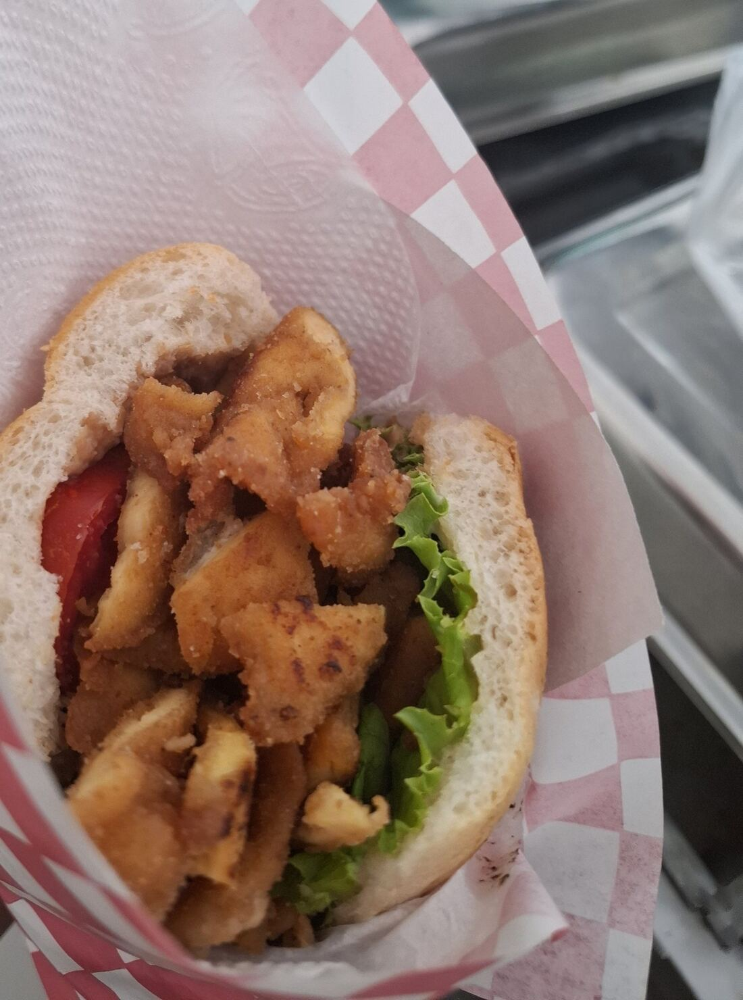
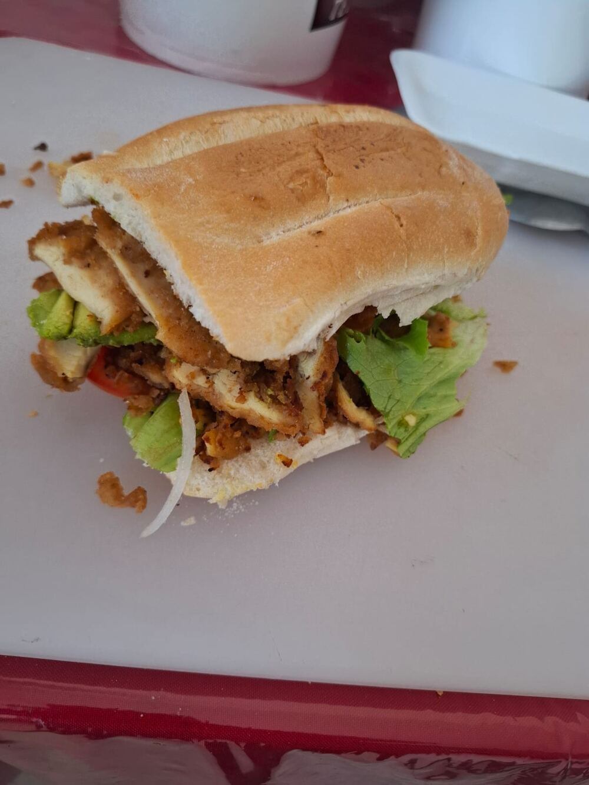
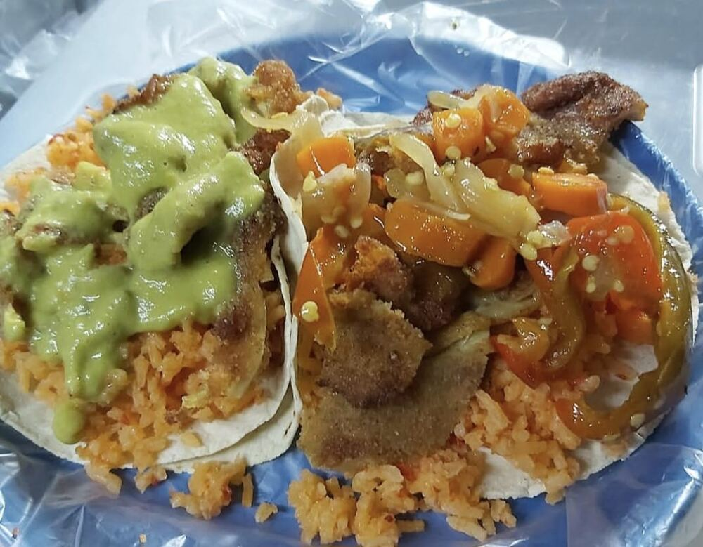
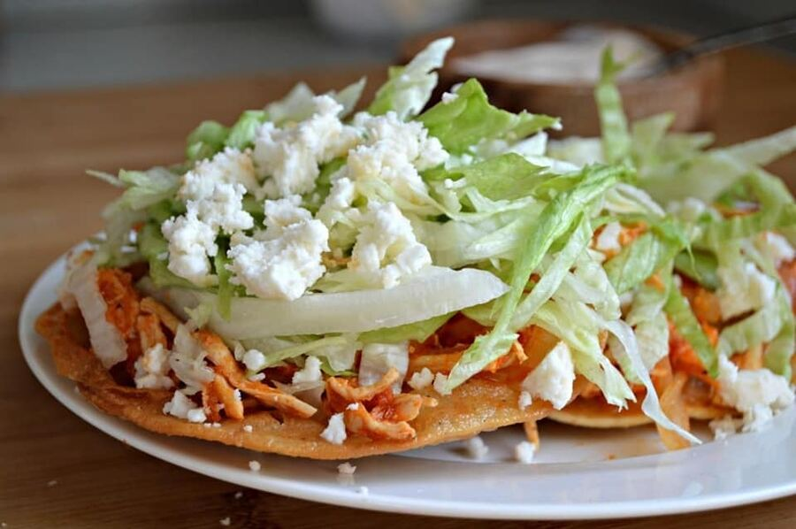
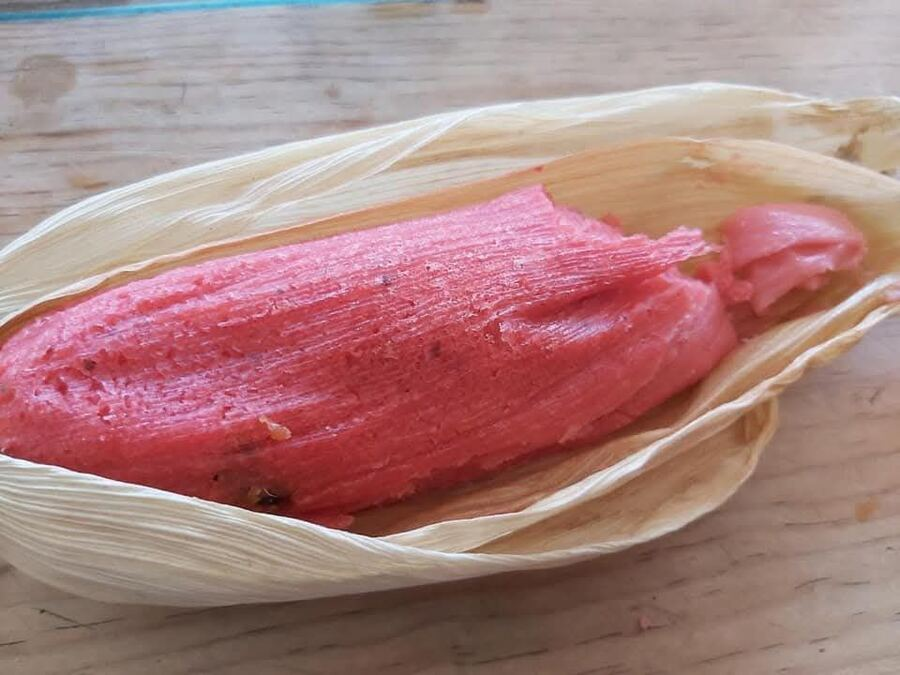
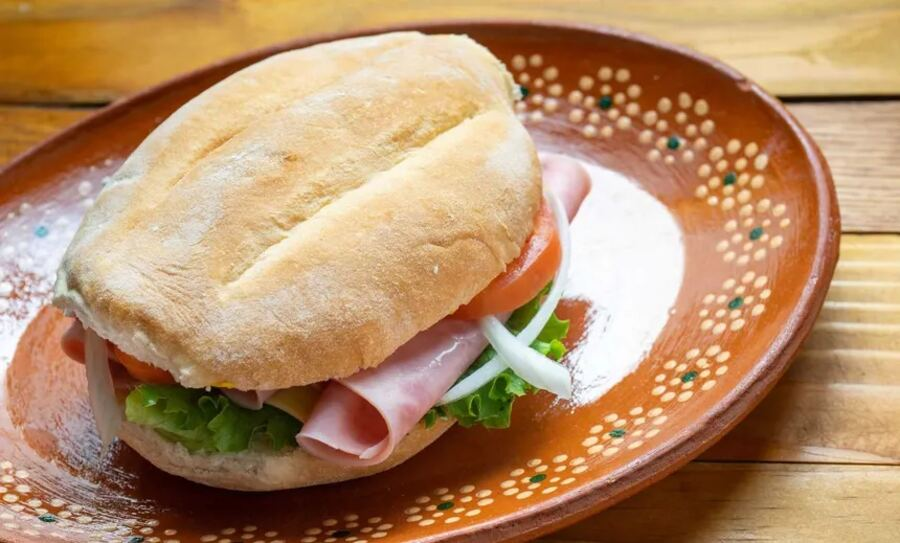
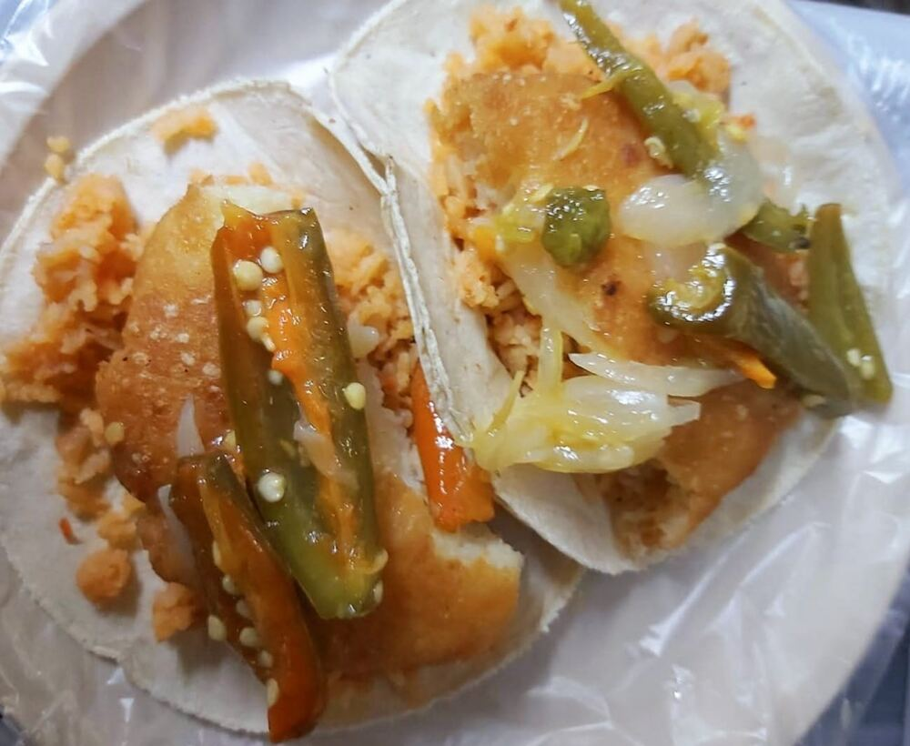
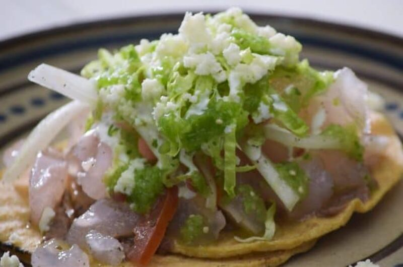

Tamales
- Maíz
- Verdes
- Rojos
- Rajas
- Dulce (piña, fresa)
- Oaxaqueño
- Mole (rojo)
- Salsa verde
★ Cocina casera desde el fogón
Tamales, tortas y antojitos mexicanos hechos como en casa, todos los días.

Hecho al momentoUna probadita de nuestros platillos, tal como llegan a la mesa.

Torta de milanesa
Tacos acorazados
Tostada de tinga
Tamal dulce de fresa
Torta de jamón
Tacos acorazados con curtido
Tostada de pataA un costado del Hospital Dr. José Parres, frente al Albergue Familiar.
Gustavo Gómez Azcárate 101
Col. Lomas de la Selva, 62270
Cuernavaca, Morelos
A un costado del Hospital Dr. José Parres, frente al Albergue Familiar.
Cómo llegar